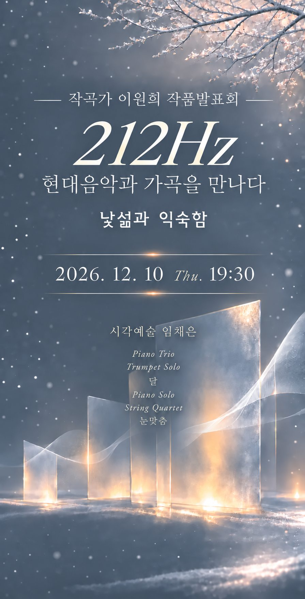
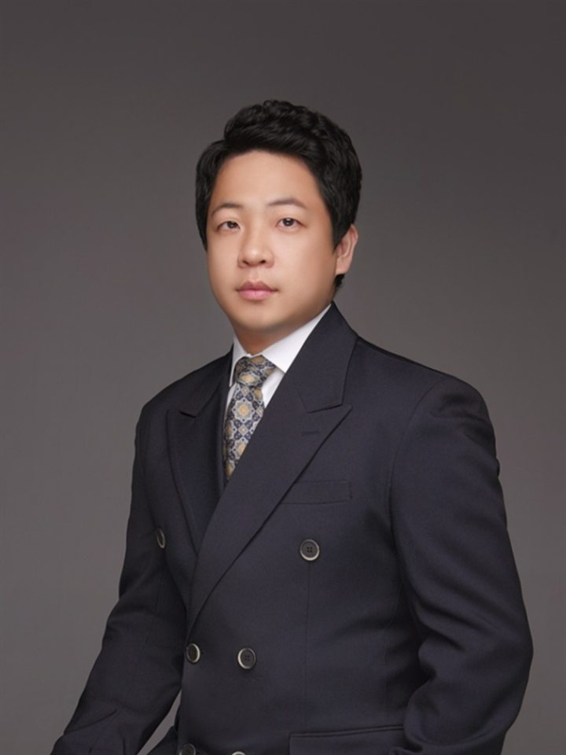

Unfamiliar
낯섦
현대음악
익숙한 문법을 벗어난
화성과 음색,
처음 듣는 소리의 설렘

작곡가 이원희 작품발표회
현대음악과 가곡을 만나다
낯섦과익숙함
익숙한 노래가 문득 낯설게 들리고,
낯선 소리가 어느새 익숙해지는
순간이 있습니다.
현대음악의 새로운 울림과
가곡의 서정 사이에서
그동안 써 내려온 음악들을
한 무대에 담았습니다.
12월 10일 저녁,
212Hz의 울림 속으로
소중한 당신을 초대합니다.
작곡가 이원희

에제르아트홀 예술감독·대전문화예술공작소 대표·앙상블 루나 작곡가
이번 공연은 인간의 내면과 감정, 사회와 역사, 자연과 예술을 소재로 한 여섯 작품으로 구성되며, 현대음악과 가곡을 통해 낯섦과 익숙함 사이에서 발견할 수 있는 음악적 아름다움을 전하고자 합니다.
Education
Awards & Activities

Visual Art
시각예술
임채은 Im Chae Eun
with Piscinas das Marés
음표를 반복·중첩하는 ‘선율층경법’으로 알바루 시자의 해수수영장과 이원희 작곡가의 현악사중주, 관객의 감각을 네 점의 악기 오브제 작품에 담았습니다.
개인전
국내외 전시, 레지던시, 인큐베이팅 프로그램, 프로젝트 전시 그룹, 문화재단 지원사업 등 문화예술 프로젝트 참여 다수
이번 작품을 준비하면서 가장 고민했던 부분은 작가로서의 고유한 표현, 이원희 작곡가의 음악이 전하는 정서, 그리고 관객의 감상 사이에서 균형을 찾는 일이었습니다.
작품의 모티브가 된 포르투갈 건축가 알바루 시자의 해안 수영장 Piscina das Marés를 처음 사진과 영상으로 접했을 때, 제게는 바다와 맞닿은 수영장에서 여유롭게 시간을 보내고 물놀이를 즐기는 사람들의 모습이 먼저 다가왔습니다. 여행지에서 느낄 수 있는 자유롭고 경쾌한 분위기는 평소 밝고 선명한 색채를 즐겨 사용하는 저의 작업 성향과도 자연스럽게 연결되었습니다.
그러나 이번 공연을 위해 작곡된 현악사중주곡을 처음 들었을 때는 제가 상상했던 풍경과는 사뭇 다른 정서를 느꼈습니다. 해안 수영장의 이미지에서 받은 시각적 인상과 음악이 전하는 감정 사이에서 어떤 방향으로 작품을 풀어내야 할지 고민이 깊어졌습니다.
개인적인 감각에만 집중하면 관객에게 다소 난해하게 다가갈 수 있고, 반대로 음악의 분위기나 관객의 이해에 지나치게 맞추면 작가로서의 고유한 표현이 약해질 수 있기 때문입니다.
작품의 기본적인 방향과 표현 방식은 유지하면서 작업이 잘 풀리지 않는 부분은 작곡가의 의견을 구하고, 가족들에게도 작품을 보여주며 일반 관객의 입장에서 느낀 감상과 의견을 들어보았습니다.
최근에는 음표를 반복하고 겹쳐 풍경을 구성하는 저만의 표현 기법인 ‘선율층경법’을 만들어 작업에 활용하고 있습니다. 기존 작업에서는 음악의 선율을 비교적 추상적으로 표현했다면, 이번에는 해안 풍경의 구체적인 형태를 살리면서 음표의 반복과 중첩을 통해 바다의 움직임과 바위, 모래사장의 질감을 표현했습니다.
음악이 전하는 정서와 해안 풍경에서 받은 시각적 인상을 조화롭게 담아내고자 했습니다. 저만의 표현 방식을 유지하면서도 관객이 작품에 자연스럽게 다가갈 수 있도록 표현의 균형을 찾는 데 중점을 두었습니다.
시각예술 임채은
Unfamiliar
현대음악
익숙한 문법을 벗어난
화성과 음색,
처음 듣는 소리의 설렘
Familiar
가곡
말과 선율이
함께 흐르는 노래,
마음에 닿는 울림
두 세계를 오가는 작곡가 이원희의 음악이
하나의 울림, 212Hz로 이어집니다.
오디세우스의 여정, 신채호의 달,
나전칠기의 빛, 바닷가의 수영장까지.
피아노 트리오부터 현악사중주, 가곡까지.
알바루 시자의 바닷가 수영장에서 출발한
Piscinas das Marés.
현악사중주와 함께 네 점의 악기 오브제 작품을 만납니다.
100석 규모의 하우스 콘서트홀 엘클래식.
스타인웨이 그랜드 피아노의 울림을
가장 가까운 거리에서.
지난 시간의 기억과 상처를 품은 채 다시 자신을 찾아가는 오디세우스의 내면적 여정을 담아냈다.
파놉티콘을 모티브로 감시자와 피감시자 사이의 모호한 경계와 권력 관계를 담아냈다.
독립운동가 신채호의 삶을 배경으로, 그리운 아내를 향한 애틋한 마음과 조국의 독립을 향한 간절한 염원을 달이라는 상징적 매개체를 통해 담아냈다.
나전칠기의 제작 과정을 모티브로, 겹겹이 쌓이는 시간의 흔적과 자개가 만들어내는 빛의 아름다움을 음악적으로 담아냈다.
건축가 알바루 시자가 설계한 바닷가의 수영장을 모티브로, 끊임없이 변화하는 바다의 움직임과 자연과 인공의 경계에서 피어나는 아름다움을 현악기의 다양한 보잉과 음색을 통해 담아냈다.
사랑하는 사람과 눈을 맞추는 순간의 설렘과 함께하고 싶은 마음, 그리고 깊어가는 그리움을 담아냈다.
곡명을 누르면 곡 소개를 볼 수 있습니다.
유중훈 Violin
충남대학교 졸업 · 한음·대전음협 콩쿠르 1위 · 대전아트필 오케스트라, 청주시립교향악단 비상임단원 역임
김현태 Cello
목원대학교 관현악과 졸업, 중앙대학교 대학원 석사 수료 · A.H.C.P Rising Star Concert 연주 · 비바아첼 필하모닉 협연
김수현 Piano
목원대학교 피아노과 학사, 이화여자대학교 반주과 석사 · 현) 목원대학교 반주과 박사과정 재학 · 클래시모 필하모닉 피아니스트
안성준 Trumpet
충남대학교 관현악과 졸업, AMPA Conducting 수료 · Sydney Korean Wind Orchestra 협연 · 테이스트 브라스 앙상블 리더, 컬러스 트럼펫 앙상블 단원
김동우 Tenor
충남대학교 예술대학 음악과 졸업 · 다수의 오케스트라 협연 및 오페라 주·조역 출연 · 현) 청주시립합창단 차석단원, 더테너즈 멤버
조재량 Piano
단국대학교 기악과 졸업, 성신여자대학교 반주학과 석사 · 예술의전당, 세종문화회관 등 다수의 독창회 및 독주회 반주 · 가톨릭대학교 성악과 실기 반주자
최상미 Piano
독일 카를스루에 국립음대 학사 및 석사 졸업 · 독일 바이마르 국립음대 쳄발로 최고연주자과정 졸업 · 현) 한국하프시코드협회 이사 및 전문연주자
하정화 Violin
한양대학교 졸업 · 한경필하모닉, 심포니송 단원 역임 · 현) 앙상블 자연의소리, 이리스콰텟, 대전아트필하모닉 오케스트라 단원
김수지 Violin
충남대학교 관현악과 졸업, 성신여자대학교 음악학과 석사 · 경희대학교 테크노경영대학원 문화예술경영 석사과정 재학 · 현) 에제르아트홀·에제르앙상블 대표
황정은 Viola
한양대학교 음악대학 졸업 · 천안예술의전당 페스티벌 오케스트라 비올라 수석 역임 · 현) 에제르앙상블, 이리스콰텟, 대전아트필하모닉 오케스트라 단원
박수미 Cello
한양대학교 졸업, 한국예술종합학교 전문사 오케스트라과정 수료 · 전주시립교향악단 비상임단원 역임 · 현) DCMF 오케스트라 단원, 앙상블 이리스콰텟 멤버
편성을 누르면 연주자 약력을 볼 수 있습니다.
2026. 12. 10 Thu. 19:30
2026년 12월 10일 목요일 오후 7시 30분
December 2026
엘클래식 L Classic
100석 하우스 콘서트홀 · STEINWAY & SONS
대전 유성구 테크노중앙로 50
디티비안S C동 4층
(지번) 대전 유성구 관평동 940 · 042-933-2050
낯섦과 익숙함이 만나는 그 밤,
212Hz의 울림 속에서
당신을 기다리겠습니다.